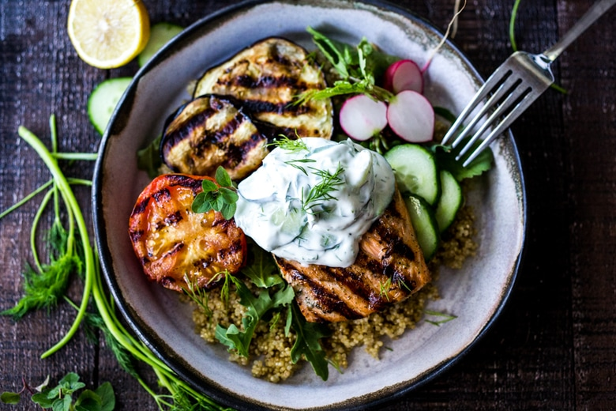

Recipe Example
This Recipe Card is for documentation. It is to be used as a base for further html/css construction.
This Recipe Card is for documentation. It is to be used as a base for further html/css construction.